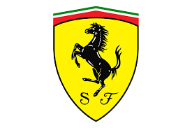

Teams
Hier zijn de resultaten van alle teams in het afgelopen seizoen en hoevaak ze Wereldkampioen zijn geworden:
| Team | Wereldkampioen | Punten afgelopen seizoen | Rijders |
|---|---|---|---|
| Redbull | 5 keer | 759 | Verstappen en Pérez |
| Ferrari | 16 keer | 554 | Lecrec en Sainz jr. |
| Mercedes | 8 keer | 515 | Hamilton en Russell |
| Alpine | 0 keer | 173 | Alonso en Ocon |
| McLaren | 8 keer | 159 | Norris en Riccardo |
| Alfa Romeo | 0 keer | 55 | Bottas en Zhou |
| Aston Martin | 0 keer | 55 | Vettel en Stroll |
| Haas | 0 keer | 37 | Schumacher en Magnussen |
| AplphaTauri | 0 keer | 35 | Gasly en Tsunoda |
| Williams | 9 keer | 8 | Latifi en Albon |
Ik ga nu nog wat dieper in op een team:
Ferrari
Ferrari is misschien wel 1 van de meeste bekende auto merken in de wereld. Ferrari rijdt al in formula 1 sinds het aller eerste seizoen wat er was en hebben daarna ook niet 1 seizoen gemist. In al die jaren hebben ze veel kampioenschappen weten te winnen.